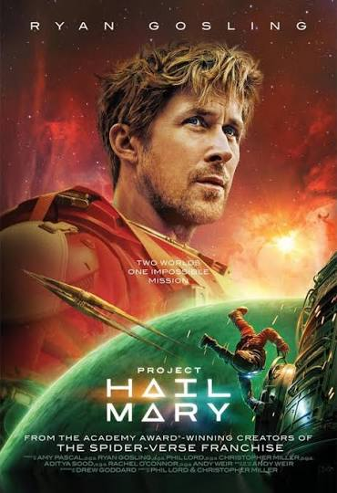

¿Cuántas son dos y dos?
Salvando tu hogar a años luz de distancia
Introducción
Cuando pensamos en literatura espacial, es normal que se nos venga a la cabeza escenas de fantasía y situaciones que son imposibles que se produzcan en la vida real. La pregunta es, ¿se podría crear una historia espacial partiendo del conocimiento que tenemos a día de hoy? ¿Sería posible, incluso, poder viajar a millones de kilómetros a distancia de nuestro planeta en una misión desesperada si las condiciones se cumplieran? Precisamente de esto va esta historia centrada en cómo un hombre consigue salvar a la humanidad y la Tierra.
Reseña (sin spoilers)
Personalmente, desconocía de la existencia de este libro hasta que me lo llegaron a recomendar. Cuando abrí las primeras páginas pensé que iba a ser el caso con otras historias como por ejemplo Star Wars, las cuales optan por el uso de magia y tecnología futurista para justificar los viajes espaciales.
Por esa razón, quedé gratamente sorprendido al leer cómo no solamente este libro está basado en tecnología existente a día de hoy (con una matización importante que no revelaré por spoilers), sino que además te explican todas las decisiones que los personajes toman respecto al funcionamiento de la nave. Creo que esto es lo que diferencia a este libro de otras historias espaciales.
Me ha parecido muy interesante de principio a fin; con explicaciones que no se hicieron en absoluto pesadas de leer y momentos muy tensos donde no podía dejar de leer página tras página. Ryland Grace me pareció un muy buen protagonista con el que puedes empatizar con los problemas que se va encontrando en su travesía por el espacio.
Si te gusta leer y te llama la atención o te lo llegaron a mencionar, ¡te recomiendo este libro!
Autor
Andy Weir es un ingeniero informático y escritor de novelas exitosas, entre las que destacan Artemisa, El marciano y Proyecto Hail Mary.
Su pasión por el espacio le ha permitido crear obras capaces de conseguir adaptaciones cinematográficas y múltiples premios, entre los que se podrían destacar el Premio Seiun a la mejor novela extranjera (2015 y 2022) y el Premio Astounding (2016).
Su página web oficial es la siguiente: Andy Weir
Película

El libro ha recibido una adaptación cinematográfica dirigida por Phil Lord y Christopher Miller, escrita por Drew Goddard (adaptando el libro a un formato cinematográfico) y protagonizada por Ryan Gosling y Sandra Hüller.
Creo que es una buena adaptación. Las escenas del espacio son visualmente preciosas y me gustaron ciertas libertades creativas que se tomaron respecto al libro. Dicho esto, creo que el libro explica bastante mejor lo que está pasando y se pierden muchas escenas de introspección de Ryland Grace, por lo que personalmente recomendaría primero leer el libro antes de ver la película.
En el momento de escribir esta reseña tiene un 7,2 en la página web de filmaffinity.
Bibliografía
- Fuentes de información
- Documentación de la obra Proyecto Hail Mary obtenida de Wikipedia.
- Información de Andy Weir referenciada a través de su página de Wikipedia.
- Contenido asociado a la adaptación cinematográfica conseguido desde filmaffinity.
- Página web oficial de Andy Weir
- Explicación de lo que es el Premio Seiun
- Definición y ganadores de las ediciones del Premio Astounding
- Imágenes e iconos empleados
- Icono de astronauta por Icons8.
- Fotografía de Andy Weir obtenida en filmaffinity.
- Carátula de la película Proyecto Hail Mary obtenida en filmaffinity.